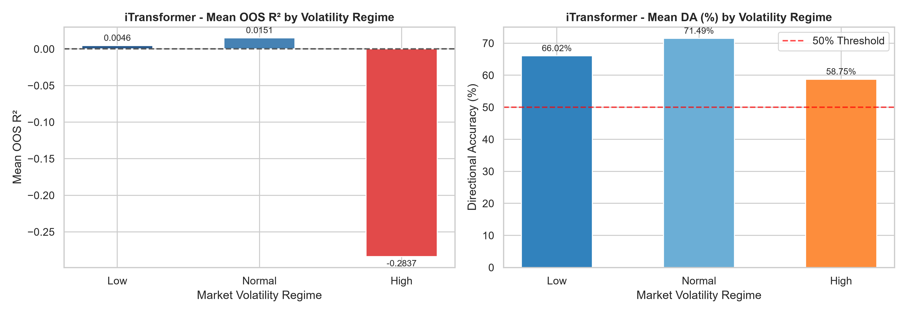
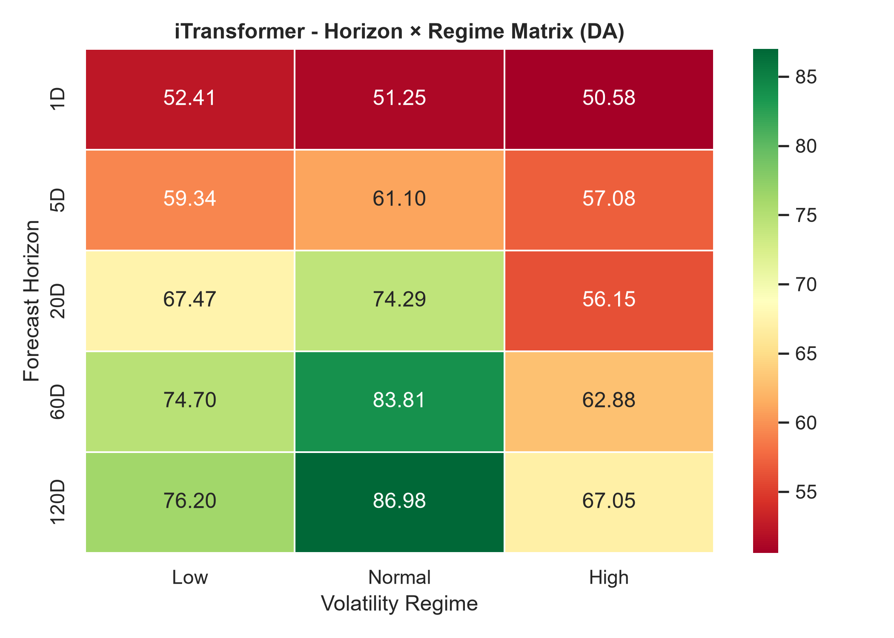
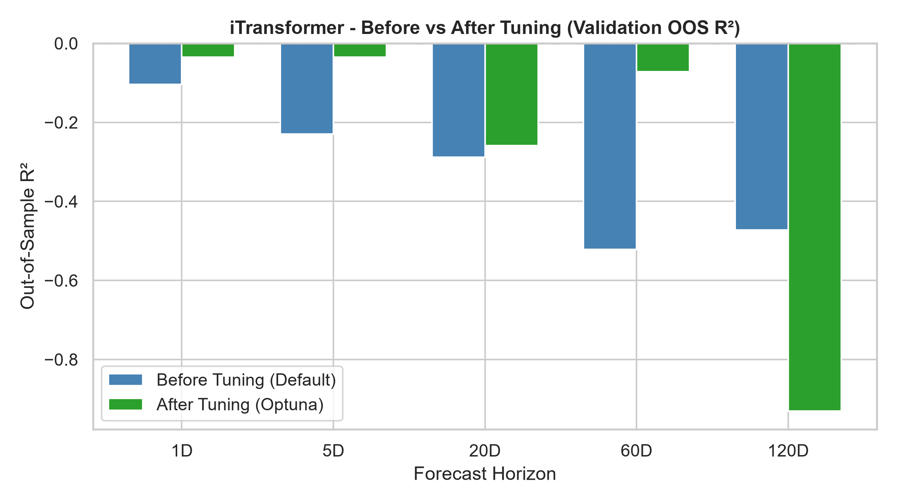
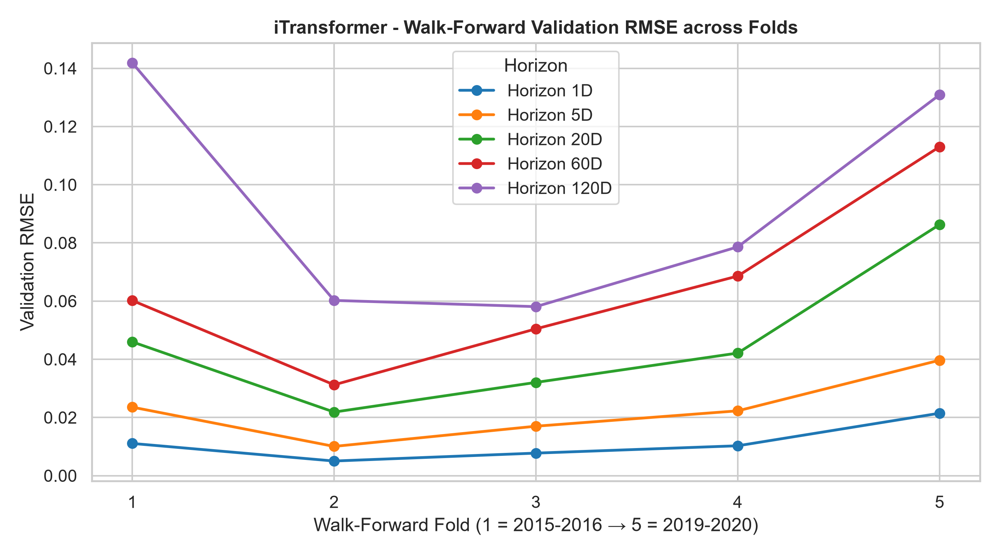

Forecast Horizon Performance
Research Project: When Does Equity Return Predictability Decay? A Multi-Horizon and Regime-Dependent Out-of-Sample Analysis
Model Family: Advanced Time-Series Deep Learning | Model Category: Regression
Evaluation Status: Strict Walk-Forward Out-of-Sample & Independent Hold-out Verification
iTransformer{'lookback': 40, 'd_model': 32, 'nhead': 2, 'num_layers': 2, 'dim_feedforward': 64, 'dropout': 0.21319076464081066, 'learning_rate': 0.0004941640299715253, 'weight_decay': 0.0001, 'batch_size': 16, 'epochs': 1000, 'patience': 7}The table below synthesizes predictive performance across the three evaluation stages. Note that Part A and Part B evaluate on Walk-Forward Validation (Split 2), whereas Part C evaluates on the strictly independent hold-out test set (Split 3).
| Evaluation Stage | OOS_R2 | RMSE | MAE | DA (%) | Naive Positive DA (%) | Excess DA (pp) | DM Statistic | DM p-value | Sign Test p-value | N |
|---|---|---|---|---|---|---|---|---|---|---|
| Part A – Before Tuning | -0.323 | 0.0487 | 0.0372 | 57.29% | N/A | N/A | N/A | N/A | N/A | 1360 |
| Part B – After Tuning | -0.2659 | 0.0476 | 0.0371 | 60.88% | N/A | N/A | N/A | N/A | N/A | 1360 |
| Part C – Final Independent Test | -0.1308 | 0.0512 | 0.0396 | 66.12% | 66.61% | -0.00 | -0.2143 | 0.6737 | 0.0343 | 1362 |
Analysis of predictive decay across horizons from ultra-short term (1D) to long-term macroeconomic horizon (120D).
| Horizon | OOS_R2 | RMSE | MAE | DA | Naive_Positive_DA | Excess_DA | DM_Stat | DM_pvalue | Sign_pvalue | Observations |
|---|---|---|---|---|---|---|---|---|---|---|
| 1D | -0.0083 | 0.0106 | 0.0076 | 0.5132 | 0.5374 | -0.0242 | 0 | 1 | 0.1715 | 1362 |
| 5D | -0.0009 | 0.0223 | 0.0165 | 0.594 | 0.594 | 0 | -0.0564 | 0.5225 | 0 | 1362 |
| 20D | 0.0103 | 0.0415 | 0.0325 | 0.6689 | 0.6689 | 0 | 0.6143 | 0.2696 | 0 | 1362 |
| 60D | -0.359 | 0.0764 | 0.0598 | 0.7496 | 0.7496 | 0 | -1.0038 | 0.8422 | 0 | 1362 |
| 120D | -0.296 | 0.1053 | 0.0817 | 0.7805 | 0.7805 | 0 | -0.6256 | 0.7342 | 0 | 1362 |
Performance breakdown conditioned on market volatility regimes (Low, Normal, High) constructed using expanding quantiles.
| Regime | OOS_R2 | RMSE | MAE | DA |
|---|---|---|---|---|
| Low | 0.00462 | 0.03484 | 0.02918 | 0.66024 |
| Normal | 0.0151 | 0.04014 | 0.03232 | 0.71486 |
| High | -0.28372 | 0.07144 | 0.05786 | 0.58748 |

Multi-dimensional matrix displaying performance across the 5 × 3 Horizon × Regime state space.
| Horizon | Low | Normal | High |
|---|---|---|---|
| 1D | 0.0014 | -0.0269 | -0.0013 |
| 5D | 0.0048 | 0.0032 | -0.0039 |
| 20D | 0.0049 | -0.0015 | 0.0174 |
| 60D | -0.0095 | 0.0331 | -0.7347 |
| 120D | 0.0215 | 0.0676 | -0.6961 |


Comparison between baseline default architecture parameters (Part A) and Optuna-optimized hyperparameters (Part B) on Walk-Forward Validation.
| Horizon | Before_OOS_R2 | After_OOS_R2 | Delta_OOS_R2 | Before_RMSE | After_RMSE | Delta_RMSE | Before_DA | After_DA | Delta_DA |
|---|---|---|---|---|---|---|---|---|---|
| 1D | -0.1036 | -0.0347 | 0.0688 | 0.0113 | 0.0111 | -0.0002 | 0.5162 | 0.5272 | 0.011 |
| 5D | -0.2296 | -0.0348 | 0.1948 | 0.0249 | 0.0225 | -0.0024 | 0.5287 | 0.5551 | 0.0265 |
| 20D | -0.2885 | -0.2584 | 0.0301 | 0.0472 | 0.0457 | -0.0015 | 0.5463 | 0.5721 | 0.0257 |
| 60D | -0.5214 | -0.0717 | 0.4498 | 0.076 | 0.0647 | -0.0113 | 0.6118 | 0.7081 | 0.0963 |
| 120D | -0.4721 | -0.9301 | -0.458 | 0.0839 | 0.0939 | 0.01 | 0.6618 | 0.6816 | 0.0199 |

The Final Independent Hold-out Test (Split 3: 2020–2026, 1,362 days) serves as the definitive out-of-sample empirical evidence. All preprocessing steps and hyperparameter choices were completely frozen prior to test inference.
20D)Stability evaluation across the 5 expanding walk-forward folds (Split 2):
| Horizon | Mean_OOS_R2 | Std_OOS_R2 | Min_OOS_R2 | Max_OOS_R2 | Mean_RMSE | Std_RMSE | Mean_MAE | Mean_DA |
|---|---|---|---|---|---|---|---|---|
| 1D | -0.0347 | 0.0365 | -0.0856 | 0.0006 | 0.0111 | 0.0062 | 0.0073 | 0.5272 |
| 5D | -0.0348 | 0.0413 | -0.084 | 0.0101 | 0.0225 | 0.011 | 0.0158 | 0.5551 |
| 20D | -0.2584 | 0.2802 | -0.548 | 0.0394 | 0.0457 | 0.0246 | 0.0332 | 0.5721 |
| 60D | -0.0717 | 0.1661 | -0.2158 | 0.2053 | 0.0647 | 0.0304 | 0.0494 | 0.7081 |
| 120D | -0.9301 | 1.8614 | -4.2399 | 0.0507 | 0.0939 | 0.0398 | 0.0798 | 0.6816 |

20D (OOS R² = 0.0103)60D (OOS R² = -0.3590)NormalHigh